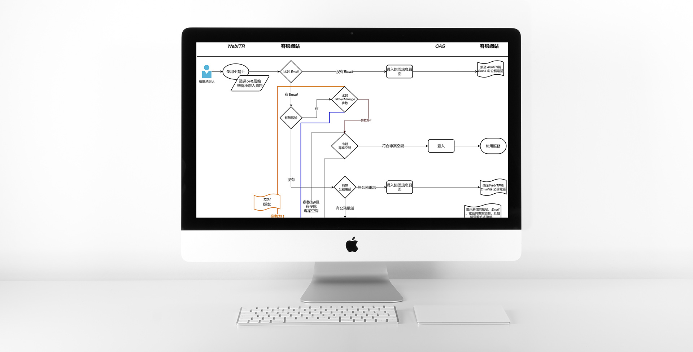
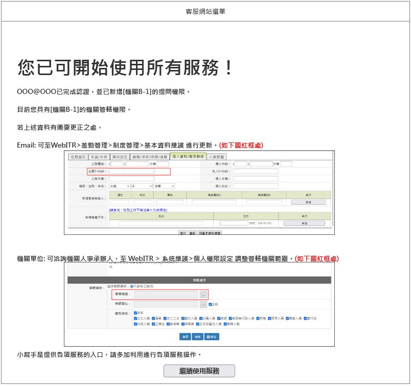
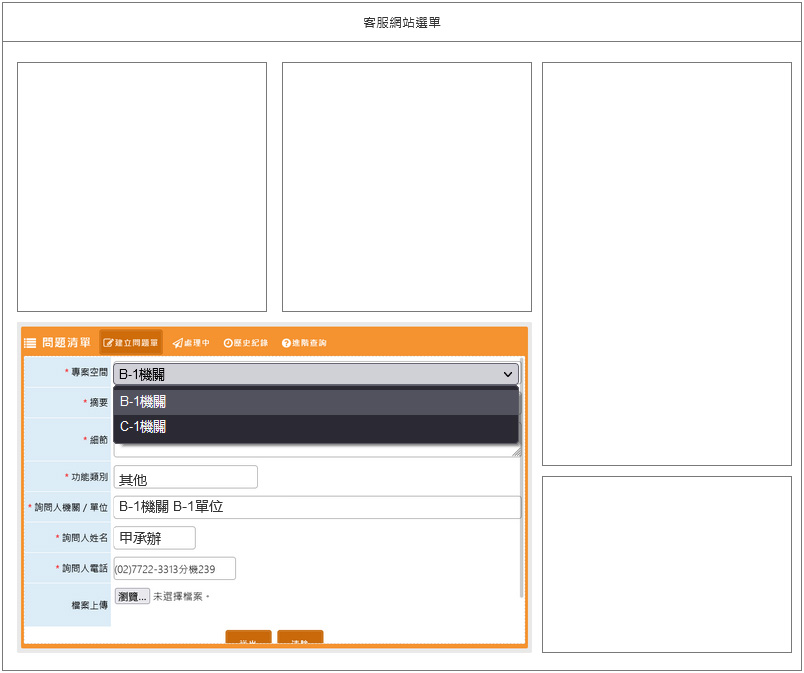
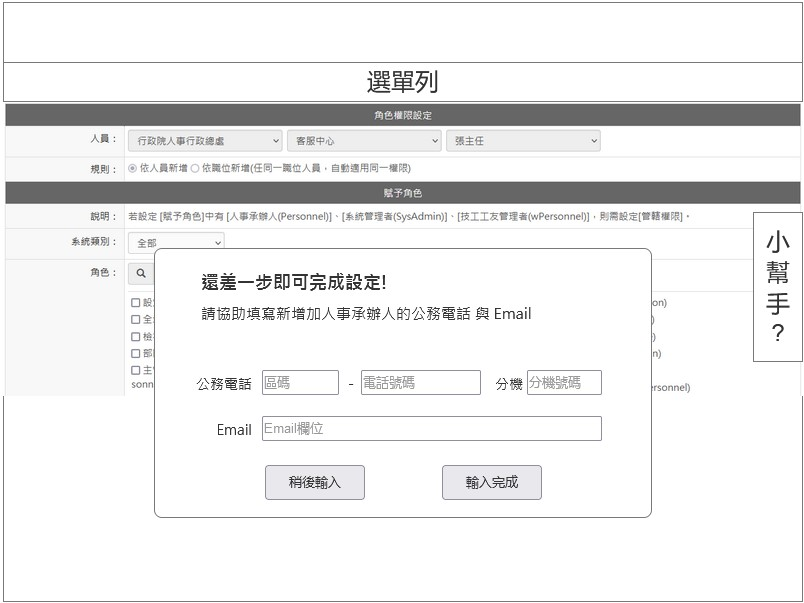
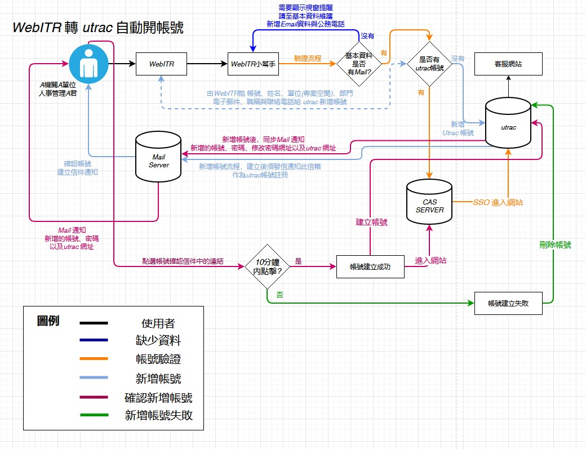

帳號同步功能開發
2021/7
wireframe密碼：uniong-
差勤系統使用者需要進入客服網站開立問題單，但因差勤系統帳號與提問系統帳號屬於各自獨立資料庫，常有使用者會因為帳號與密碼問題，進而提出相關問題。
需求分析
-
- 能由差勤系統帳號系統使用SSO自動新增提問帳號功能。
- 差勤系統的設定個人權限的步驟，同步新增提問系統的所需要的資料(聯繫用Email與公務電話)。
- 因差勤系統的管轄機關數量參數會透過URL傳送，傳送的字元受到URL長度限制，若傳送超過5個以上的機關代碼，會有URL過長的問題。故若擁有超過5個管轄機關的承辦人，將傳送參數表示為超過5個機關，並帶入該承辦所屬機關的機關代碼。此方式依照先前規劃版本的功能，依據參數調整提問系統的資料會，將使用者的權限內容同步。
- 撰寫規格分析文件提供開發。
產品功能企劃
-
- 考量使用機關的承辦人聯絡方式，故需要於差勤系統的基本資料填寫Email與電話，且需要將Email設定為與問題單系統的Email相同，作為帳號判斷依據
- 使用者與管轄機關數量可為一對多，須同步帶出差勤系統中設定管轄機關數量的「機關代碼」對應問題單的權限內容
- 能夠以系統方式自動新增帳號，解決帳處理號相關問題量。
- 使用SSO登入串接
功能特點
-
- 於差勤系統有設定基本資料的使用者，能自動新增提問系統的帳號/與權限調整，並溝通如何設定。（訊息畫面示意）
- 提問權限可提供選擇正確的單位，提高客服處理相關問題效率。
- 設定管轄權限時同步提醒需要新增基本資料，將操作斷點發生機會降至最低。
流程圖示意
-
- 第一版本流程圖
 - 確認版流程圖

- 第一版本流程圖
開發成果
-
- 2021/6/8 上線
覆盤
-
原因說明：
功能上線原規劃的方式會利用更嚴謹的機制驗證使用者Email(帳號），但屬性與機制上與現況有落差，因差勤系統使用情況與市場上的end user 情境不同，在規劃版本中加入了Mail 驗證，確保資料正確性，而經流程討論，使用者學習成本過高，也不太需要驗證的複雜流程，提供可用的串接確保能正常登入即可。改善方向：
各軟體使用情境會依據類別與環境問題有不同的解決方式，此問題在於承辦人員並非都是能了解系統的使用方式，若增加檢核機制的流程，可能會衍生額外的問題發生，本身應多再與內部確認初步流程，才能更有共識的規劃出符合企業使用的功能。